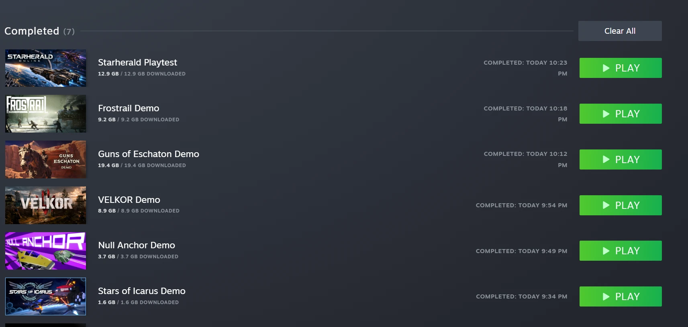

DevblogGames and AI
Seven demos in one evening, and the games I was waiting for
The games I’ve wanted for twenty years are starting to ship, and AI is how they’re getting made. The tool doesn’t make the game, though.
- AI
- Game development
- Godot

I’ve wanted the same kind of game for twenty years: big shared worlds, ships, survival, things you build that other players can take from you. For most of that time nobody made them. The few that came out were made by large studios that couldn’t afford to take the risk, or by small teams that ran out of time. Eventually I stopped waiting and started building one myself.
Tonight I downloaded seven demos and playtests from Steam, one after another: Starherald, Frostrail, Guns of Eschaton, VELKOR, Null Anchor, Stars of Icarus and one more. A year ago a list like that would have been one or two serious projects in a sea of asset flips. Tonight a lot of them were the kind of game I’ve been waiting for, and a lot of them were made by small teams using AI.
Starherald
Starherald is the one that stopped me. As far as I can tell it’s a small team working in Godot with AI in the workflow, and what they’ve built is in the territory of EVE Online: a persistent space game of the size that used to take a studio and a decade.
That used to be impossible for a small team. Writing the server, the network code, the interface, the tools and the content takes more hours than a few people have. AI changes the number of hours. It doesn’t change who has the vision.
Meanwhile, on the forums
All of this ships into a loud anti-AI mood. Steam asks developers to disclose AI use, and the disclosure gets read as a confession. Review sections fill up with people who decided a game is worthless before they played it.
The irony is that almost nothing those people play is free of AI. Upscalers like DLSS are machine learning. Code completion is in nearly every studio’s editor. Denoisers, procedural tools, animation cleanup and voice processing are all in the pipeline. The line they think they’re defending was crossed years ago. They only notice it when someone says so out loud.
The tool isn’t the game
AI doesn’t make good games by itself, and Null Anchor is the clearest example from tonight. It has the same tools Starherald has, and it feels like nobody sat with it and asked whether it was any good.
That’s the real lesson, and it isn’t the one the anti-AI crowd wants. AI is an amplifier. Taste, design, judgement and the stubbornness to throw away work that doesn’t look right still have to come from someone. Starherald has that. Null Anchor doesn’t. The tool was the same.
What it means for what I’m building
I’m building my own game the same way: Godot, C#, and Claude doing a large share of the implementation while I decide what the game is and reject what isn’t good enough. That covers a dedicated server, building and raiding, guns, vehicles, animals, sound and effects. Most of the work isn’t typing code. It’s looking at what came out, saying “no, not like that”, and doing it again.

Seeing Starherald tonight told me something I needed to hear. The games I waited twenty years for are finally getting made, by people who stopped waiting. I intend to be one of them.